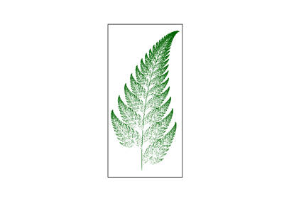

Breakthroughs in Fractals and Chaos#
“Clouds are not spheres, mountains are not cones, coastlines are not circles.” – Benoit Mandelbrot, The Fractal Geometry of Nature, 1982
The objects in mathkit.fractals_chaos – self-similar sets with a
non-integer dimension, cellular automata that build astonishing
complexity from a single bit-flip rule – share a common thread: each
was, at its discovery, a mathematical curiosity dismissed as pathological
before later turning out to describe something genuinely physical. This
chronology traces that thread from a 19th-century “monster” curve to the
computer-generated images that gave the field its modern name.
1883 – Cantor’s Set and the First “Monster”#
Georg Cantor’s construction – repeatedly remove the open middle third of every remaining interval, starting from \([0,1]\) – produces a set that is simultaneously uncountably infinite, has total length zero, and contains no interval at all. Nineteenth-century analysts largely treated such constructions as pathological counterexamples to be avoided rather than objects worth studying for their own sake; it would be nearly a century before Mandelbrot’s reframing (below) made “monster” sets like Cantor’s the central objects of an entire field.
Connection: the same self-similar, remove-and-recurse logic underlies
mathkit.fractals_chaos.systems.box_counting.box_counting_dimension()’s
subject matter directly: the Cantor set’s box-counting dimension,
\(\log 2/\log 3 \approx 0.631\), is the canonical first example of a
non-integer fractal dimension.
References: G. Cantor, “De la puissance des ensembles parfaits de points,” Acta Mathematica 4 (1884), 381-392 (describing the construction, first announced in an 1883 paper).
1890 – Peano and Sierpinski’s Space-Filling and Gasket Curves#
Giuseppe Peano’s 1890 continuous curve that passes through every point of a filled square shocked contemporaries who assumed a “curve” must be one-dimensional; Waclaw Sierpinski’s 1915 triangle (and the closely related 1916 carpet) gave the opposite extreme – a curve-like object built by repeatedly removing the middle triangle (or square) from what remains, converging to a self-similar set whose dimension is a definite fraction between 1 and 2.
Implementation: mathkit.fractals_chaos.systems.ifs.SierpinskiTriangle
and SierpinskiCarpet
generate both directly via the chaos game, with
mathkit.fractals_chaos.systems.box_counting.box_counting_dimension()
recovering exactly the \(\log 3/\log 2\) (triangle) and
\(\log 8/\log 3\) (carpet) dimensions numerically.
References: W. Sierpinski, “Sur une courbe dont tout point est un point de ramification,” Comptes Rendus de l’Academie des Sciences Paris 160 (1915), 302-305.

Barnsley fern, Sierpinski triangle, and Sierpinski carpet

1918 – 1919 – Fatou and Julia’s Iteration Theory#
Pierre Fatou and Gaston Julia independently developed, around the First World War, a deep theory of what happens when a complex rational function is iterated on itself: the complex plane splits into a “Fatou set” where nearby orbits behave predictably and a complementary “Julia set,” typically an intricate fractal boundary, where they do not. Both men worked entirely without computers, relying on pure complex analysis to characterize sets that would remain essentially unvisualized for over sixty years, until the machinery to actually render them existed.
Implementation: mathkit.fractals_chaos.systems.mandelbrot_julia.julia_set()
computes exactly this Fatou/Julia-set boundary for \(z\mapsto
z^2+c\) via escape-time iteration.
References: G. Julia, “Memoire sur l’iteration des fonctions rationnelles,” Journal de Mathematiques Pures et Appliquees 8 (1918), 47-245; P. Fatou, “Sur les equations fonctionnelles,” Bulletin de la Societe Mathematique de France 47 (1919), 161-271.
1963 – Lorenz and the Sensitive Dependence Quantified#
Edward Lorenz’s discovery of sensitive dependence on initial conditions (see the ode_dynamics chronology) raised an obvious follow-up question: can that sensitivity be measured, not just observed? The Lyapunov exponent – named for Aleksandr Lyapunov’s 1892 stability theory, though its modern algorithmic form as an average logarithmic separation rate dates to the 1960s-70s numerical-chaos literature – answers exactly this: a positive exponent means nearby trajectories separate exponentially fast (chaos), a negative one means they converge (a stable orbit).
Implementation: mathkit.fractals_chaos.systems.lyapunov.lyapunov_exponent_1d_map()
and lyapunov_exponent_flow()
compute exactly this exponent for a 1D map and a flow respectively, the
latter via the Benettin et al. shadow-trajectory renormalization method.
References: A. Wolf, J. B. Swift, H. L. Swinney, and J. A. Vastano, “Determining Lyapunov Exponents from a Time Series,” Physica D 16(3) (1985), 285-317.

Lyapunov exponent across the logistic map’s route to chaos
1975 – Mandelbrot Names “Fractal”#
Benoit Mandelbrot’s 1975 book Les objets fractals: forme, hasard et dimension coined the word “fractal” (from the Latin fractus, broken) and, more importantly, reframed Cantor’s, Peano’s, and Julia’s once-pathological curiosities as the right mathematical language for describing the genuinely rough, self-similar shapes – coastlines, mountain ranges, lung bronchi – that smooth Euclidean geometry had always struggled to model. His 1980 computer-generated image of what is now called the Mandelbrot set, a map of every complex \(c\) for which the corresponding Julia set stays connected, became one of the most recognizable images in all of mathematics.
Implementation: mathkit.fractals_chaos.systems.mandelbrot_julia.mandelbrot_set()
generates exactly this set via Numba-accelerated escape-time iteration.
References: B. B. Mandelbrot, Les objets fractals: forme, hasard et dimension (Paris: Flammarion, 1975); B. B. Mandelbrot, The Fractal Geometry of Nature (San Francisco: W. H. Freeman, 1982).
1988 – Barnsley’s Iterated Function Systems#
Michael Barnsley’s 1988 book Fractals Everywhere gave a unifying framework for generating self-similar fractals from a small set of contractive affine maps chosen at random – the “chaos game” – and popularized it with an image that instantly made the technique famous: a strikingly lifelike fern, generated from just four simple affine transformations and their carefully chosen probabilities.
Implementation: mathkit.fractals_chaos.systems.ifs.BarnsleyFern
implements exactly Barnsley’s four-map fern via
mathkit.fractals_chaos.utils.ifs_utils.chaos_game().
References: M. F. Barnsley, Fractals Everywhere (Boston: Academic Press, 1988), Ch. 3.
Barnsley fern, Sierpinski triangle, and Sierpinski carpet
1970 – 1983 – Conway’s Life and Wolfram’s Cellular Automata#
John Horton Conway devised the “Game of Life” in 1970 (popularized that year by Martin Gardner’s Scientific American column): a deceptively simple two-state, birth/survival rule on a 2D grid capable of producing gliders, oscillators, and (as later proven) a complete Turing machine. Stephen Wolfram’s systematic 1983-84 study of the far simpler one-dimensional, two-color “elementary” cellular automata found that even these – indexed by an 8-bit rule number, only 256 possibilities in total – include rules generating structures as intricate as the Sierpinski triangle (rule 90) and behavior Wolfram classified as genuinely chaotic (rule 30).
Implementation: mathkit.fractals_chaos.systems.cellular_automata.GameOfLife
and ElementaryCA
implement both exactly, the latter using Wolfram’s own rule-numbering
convention.
References: M. Gardner, “Mathematical Games: The Fantastic Combinations of John Conway’s New Solitaire Game ‘Life’,” Scientific American 223(4) (1970), 120-123; S. Wolfram, “Statistical Mechanics of Cellular Automata,” Reviews of Modern Physics 55(3) (1983), 601-644.

Elementary cellular automata and Conway’s Game of Life